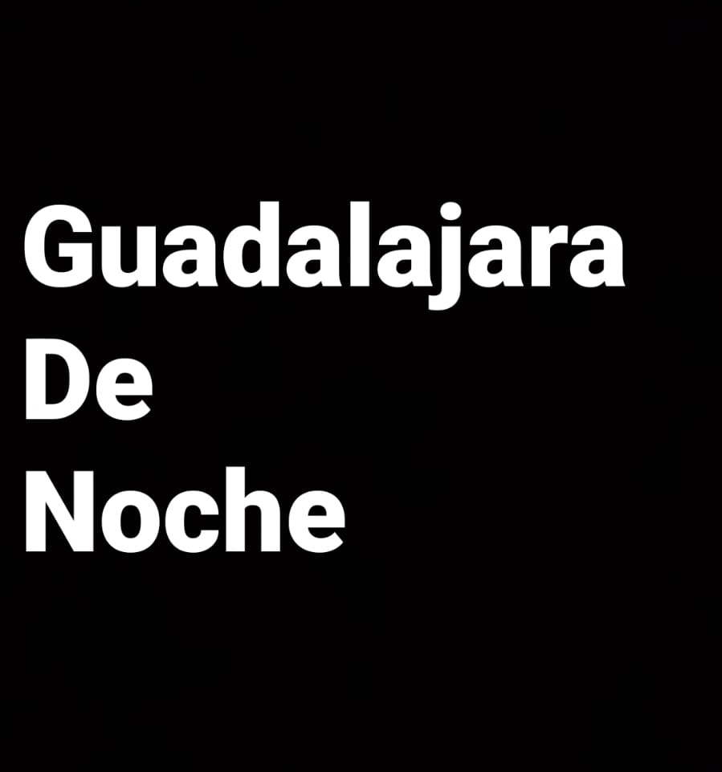

Camara.exe — Cuadro de la foto
_
□
✕
Presiona el botón para tomar tu foto

Guardando…
Guardando Tu_foto.jpg en la nube…
Tu_foto.jpg
_
□
✕
Descargar.exe
Presiona el botón para cerrar
Camara.exe
Cambiando escena…
Escena — capas
✕
Agregar imagen…
Capas (arriba = al frente)
Formato de la foto
Fondo
Encuadre
Ajustar
Llenar
Centrar
Escena
Exportar
Importar
Borrar todo
Arrastra para mover · esquinas para el tamaño · Shift conserva la proporción · flechas mueven · Supr borra la capa.
Camara.exe — Bloqueado
Pide el PIN a quien esta a cargo del evento.
⚙ Escena
Estado del Photo Booth